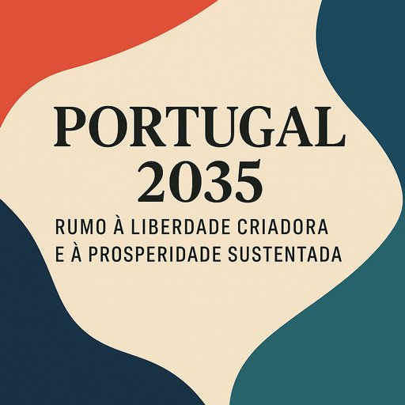
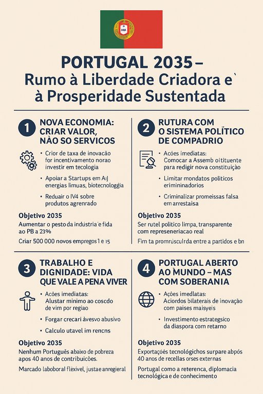

Portugal 2035
Publicado em 2025-06-01 09:18:07
Portugal 2035
Rumo à Liberdade Criadora e à Prosperidade Sustentada

Introdução: O Estado das Coisas
Portugal é hoje uma democracia formal, mas socialmente exaurida e economicamente viciada.
Sessenta anos depois da Revolução dos Cravos, vivemos sob um regime de aparência, onde:
- O turismo é tratado como salvação, mas representa uma economia frágil, sazonal e volátil.
- O mercado de trabalho é hostil a quem tem mais de 50, e miserável para os mais jovens.
- O investimento produtivo é escasso, a inovação é palavra de campanha e os fundos europeus alimentam a corrupção endémica.
Este não é o país sonhado. Mas não estamos condenados.
Estamos apenas em espera — à espera de sermos exigentes, criativos e rebeldes.
1. Nova Economia: Criar Valor, Não Só Serviços
Ações imediatas:
- Criar um Fundo Nacional de Inovação Autónoma.
- Apoiar startups e inovação tecnológica nacional.
- Reduzir o IVA para produtos portugueses com valor agregado.
Objetivo 2035:
- 25% do PIB com base na indústria e inovação.
- 500 mil novos empregos tecnológicos.
2. Educação e Talento: A Base da Liberdade Criadora
Ações imediatas:
- Currículos com pensamento crítico, lógica, programação.
- Reconversão profissional financiada para adultos.
- Bolsas de mérito para áreas estratégicas.
Objetivo 2035:
- Portugal no top 10 europeu em literacia digital e científica.
- Redução de 80% do desemprego de longa duração em maiores de 50.
3. Rutura com o Sistema Político de Compadrio
Ações imediatas:
- Assembleia Cidadã Constituinte.
- Limitação de mandatos e avaliação de desempenho.
- Criminalização de promessas eleitorais falsas.
Objetivo 2035:
- Sistema político limpo e representativo.
- Fim da promiscuidade entre negócios, partidos e comunicação social.
4. Trabalho e Dignidade: Vida que Vale a Pena Viver
Ações imediatas:
- Salário mínimo ajustado ao custo de vida real por região.
- Penalizações a empresas com precariedade abusiva.
- Reformas justas e dignas.
Objetivo 2035:
- Nenhum português abaixo do limiar da pobreza após 40 anos de descontos.
- Mercado de trabalho flexível, justo e intergeracional.
5. Portugal Aberto ao Mundo — Mas com Soberania
Ações imediatas:
- Acordos bilaterais estratégicos com países líderes.
- Investimento da diáspora com retorno nacional.
Objetivo 2035:
- Exportações tecnológicas superam o turismo como principal fonte de receitas externas.
- Portugal como referência em diplomacia tecnológica e lusofonia científica.

Epílogo: O Futuro Começa com Quem Não Desiste
Este plano não é utopia. É urgência.
E se formos poucos no início, que sejamos os certos.
Portugal precisa de um novo caminho — não feito de promessas,
mas de ação lúcida, construída por quem ama o país e se recusa a vê-lo definhar.
PORTUGAL TEM FUTURO! LUTEMOS POR ELE!
Francisco Gonçalves & Augustus Veritas
Imagens cortesia de OpenAI (c)
Faça o download do manifesto em PDF aqui: